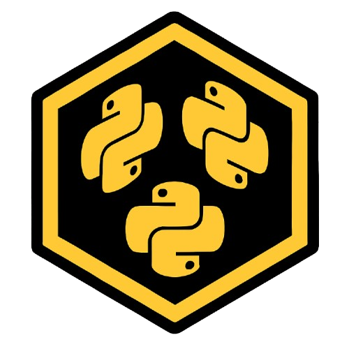

PYTHON OS // APP-LAYER FRAMEWORK
PyOS
PyOS is an open-source operating system written in Python targeting x86/x64 environments and cross-platform app-layer compatibility for Linux, Windows, macOS, Android, and iOS.
The static page is an inspectable architecture/runtime simulator. It does not claim to boot a real x86/x64 Python kernel in the browser.
BOOT // PROCESS // APP LAYER // FILESYSTEM
PyOS architecture simulator
PROCESS MODELAPP LAYERVIRTUAL FSNO REAL KERNEL
StateOFF
Processes0
Mounts0
Apps0
Target: —